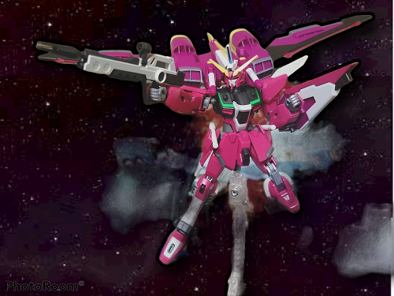
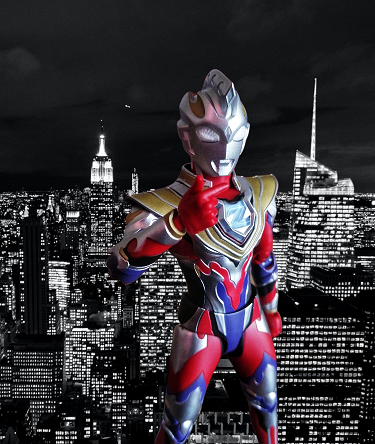
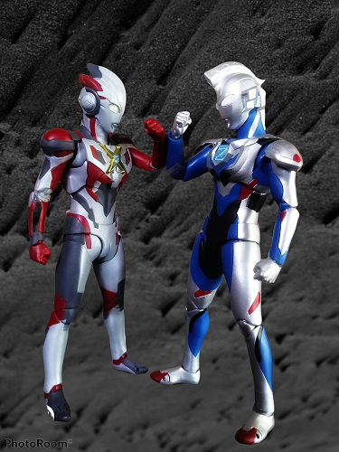
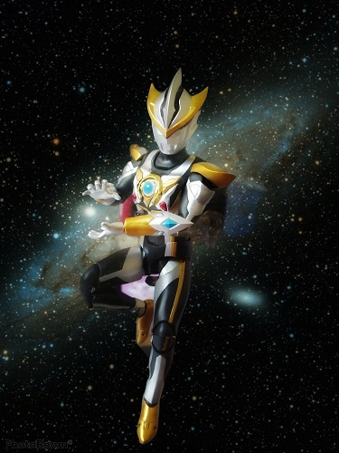
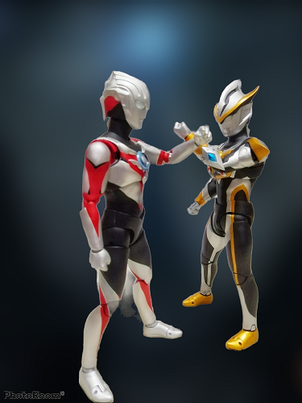
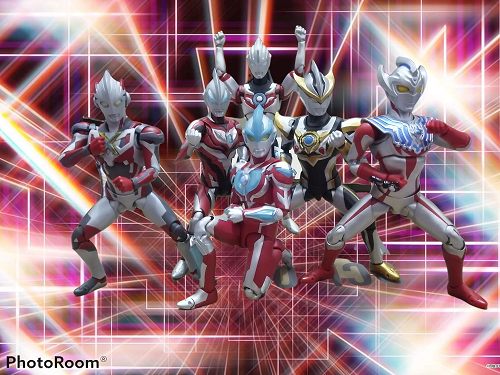

My Hobby
To begin with, My hobby is collecting action figures such as Gunpla and S.H. Figuarts.
So, according to the website Gunbies.com, Gunpla is coming from the words Gundam + plastic model, it is from the Japanese word, ガンプラ, it can be read as Ganpura, and it is manufactured by Bandai.Basically, it is a plastic model depicting various mobile suit designs from different Gundam anime series that is built from the parts in the runners (the frame like things inside the box). You can basically build one with just your bare hands and a pair of cutting plies or called nipper. But, it is more advisable and better if the nipper is really built to cut plastic). 
This is one of my gunpla collection and the only gunpla that moved me to snap the photo and edit the background, it is one of my favourite because it has unique and beautiful colour From the website Tamashii, S.H. Figuarts is a product of Bandai with the theme of "pursuing character expression by moving", this is a palm-sized standard figure series that condenses all figure techniques such as "modeling", "moving", and "coloring". There are many characters that have been produced such as Kamen Rider, Ultraman, Dragon Ball, and superheroes from Marvel. But I prefer to collect the line of Ultraman from S.H. Figuarts. So, here are some of my ultraman collections that I managed to snap and edit the pictures by using apps Photoroom and Snapseed.      With these action figures, I can release my stress because, it provides me with an enjoyable diversion that keeps me motivated, and happy. I also got to learn and improve on my photoshoot skills and editing skills so that I can create the beautiful pictures, and I hope for slowly, my skills will be more proficient. High Grade Gunpla Infinity Justice Gundam
S.H. Figuarts Ultraman Z Gamma Future
S.H. Figuarts Ultraman Z Original and S.H. Figuarts Ultraman X
S.H. Figuarts Ultraman Ruebe
S.H. Figuarts Ultraman Ruebe and S.H. Figuarts Ultraman Orb
Group Photos